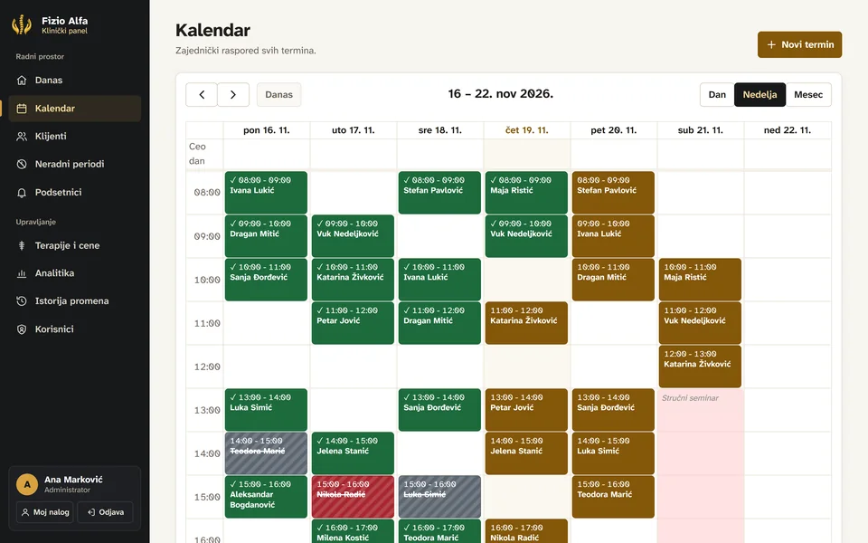

Fizio Alfa · Projet client
Moins d’administratif, plus de temps pour les patients.
Agenda, dossiers clients, facturation et rappels pour toute l’équipe d’un cabinet de kinésithérapie.
- Django · PostgreSQL
- Ordinateur + téléphone
- Serveur privé
 Boris Lahos · studio de logiciels métier · Novi Sad
Boris Lahos · studio de logiciels métier · Novi Sad
Je crée des applications métier, des sites web et des automatisations pour les petites entreprises dont le travail vit encore dans des carnets, des tableurs et des messages. Tout au même endroit, à votre façon de travailler.

Écran réel : Fizio Alfa, système pour un cabinet
Fizio Alfa — un système pour un cabinet de kinésithérapie, né d’échanges avec son équipe.
Le problème
Les informations d’un même client sont à trois endroits. Un rendez-vous déplacé va dans le carnet, le paiement dans le tableur, l’accord reste dans les messages. Chaque vérification se fait à la main.
Les mêmes informations prennent une seule forme : qui, quand, quoi et si c’est payé. Plus de recopie, plus de « je vérifie et je vous redis ».
Agenda, dossier client et paiements que toute l’équipe voit de la même façon, sur ordinateur et téléphone. C’est ainsi qu’est né Fizio Alfa.
Services
Je fais tout moi-même : l’appel, le plan, le code, le serveur et le support après la mise en service.
Rendez-vous, clients, paiements et rapports dans un seul système.
dès 1 500 €Un site rapide qui dit clairement ce que vous faites et mène aux demandes.
dès 400 €Tableurs, rappels et rapports sans ressaisie.
dès 300 €Sauvegardes, corrections et nouvelles fonctions quand il le faut.
dès 50 € / moisRéalisations
Deux systèmes que j’ai créés moi-même et mis en service, de l’analyse au serveur.
Fizio Alfa · Projet client
Agenda, dossiers clients, facturation et rappels pour toute l’équipe d’un cabinet de kinésithérapie.
BARVIS Focus · Produit maison
Minuteur, tâches, plan de la journée et statistiques, synchronisés entre appareils.
Comment commencer
Choisissez ce qui vous est le plus simple. Je réponds personnellement à tout.
Nom, contact et quelques phrases sur votre besoin. Sans compte ni inscription.
Cinq questions courtes, puis un prix et un délai indicatifs. Envoyez l’estimation en demande en un clic.
Visio ou téléphone, environ 30 minutes. Nous parlons de votre façon de travailler et de ce qui devrait être plus simple.
Estimation en une minute
Choisissez un point de départ. Les questions sur les fonctions, l’équipe, le délai et le budget suivent à l’étape suivante.
Méthode
Du premier appel au support, en cinq étapes. Vous savez toujours ce qui est en cours et ce qui suit.
Comment vous travaillez et où le temps se perd.
30 minPérimètre, délai et prix, avant tout paiement.
2 à 4 joursAprès chaque étape, une version qui fonctionne.
2 à 12 semainesImport des données et formation de l’équipe.
1 semaineCorrections et nouvelles fonctions quand vous grandissez.
en continuRepères de prix
Prix de départ de la version la plus simple. Le montant exact et le délai figurent toujours dans un devis écrit, après l’échange gratuit.

À propos
Étudiant en dernière année d’informatique et d’automatique à la Faculté des sciences techniques de Novi Sad. Je travaille directement avec vous, du premier appel au support, pour que rien ne se perde entre l’idée, le design et le code.
Pourquoi une seule personneVous parlez à celui qui conçoit, développe et maintient le système. Rien ne se perd entre la vente, le design et le code.
Questions
Selon le périmètre : un site dès 400 €, un petit outil dès 1 500 €, un système métier comme Fizio Alfa dès 4 000 €. La page des tarifs montre les fourchettes ; vous recevez un devis écrit avant tout engagement.
Oui. On crée d’abord ce qui vous simplifie le plus le travail, le reste vient ensuite, quand vous voyez le système à l’usage.
Cela dépend du périmètre ; le délai exact figure dans le devis. Après chaque étape, vous voyez une version qui fonctionne.
Si un produit existant couvre vos besoins, je vous le dirai dès le premier appel. Le sur-mesure a du sens quand votre façon de travailler n’entre dans aucun modèle.
Vos données existantes peuvent être reprises dans le nouveau système, vous ne partez pas de zéro.
Oui. Chaque système fonctionne sur ordinateur, tablette et téléphone dès le premier jour.
Le système peut tourner sur votre propre serveur ou un réseau privé, accessible à votre équipe seulement, avec des sauvegardes régulières. Je signe un accord de confidentialité sur demande.
Je reste disponible pour les corrections, améliorations et nouvelles fonctions. La maintenance démarre à 50 € par mois ; avec un forfait d’heures, le système évolue avec votre activité.
Envoyez quelques phrases. Le premier échange est gratuit, dure environ 30 minutes et ne vous engage à rien.
Plutôt une estimation ou un échange ?Estimation de projetÉchange gratuithello@barvis-studio.dev